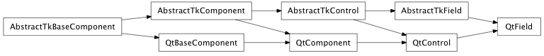

Bases: enaml.widgets.control.Control
A single-line editable text widget.
Among many other attributes, a Field accepts a converter object which allows any arbitrary python object to be displayed and edited by the Field.
The maximum length of the field in characters. The default value is Zero and indicates there is no maximum length.
Whether or not the field is read only. Defaults to False.
The position of the cursor in the field. Defaults to Zero.
A read only property that is set to True if the user has changed the line edit from the ui, False otherwise. This is reset to False if the text is programmatically changed.
The grayed-out text to display if ‘value’ is empty and the widget doesn’t have focus. Defaults to the empty string.
How to obscure password text in the field.
A converter object for converting values to and from the component The default is basic str(...) conversion.
The Python value to display in the field. The default value is an empty string.
A read-only property that returns the internal text of the field.
A property which manages the conversion to and from value and the string for display and editing. Toolkit implementations should use this attribute for getting/setting the value.
A read only property that is updated with the text selected in the field.
Fired when the text is changed by the user explicitly through the ui but not programmatically. The args object will contain the text.
Fired when the return/enter key is pressed in the line edit.
How strongly a component hugs it’s contents’ width. Fields ignore the width hug by default, so they expand freely in width.
Overridden parent class trait
Sets the selection to the bounds of start and end.
If the indices are invalid, no selection will be made, and any current selection will be cleared.
| Parameters: |
|
|---|
Select all the text in the line edit.
If there is no text in the line edit, the selection will be empty.
Simple backspace functionality.
If no text is selected, deletes the character to the left of the cursor. Otherwise, it deletes the selected text.
Simple delete functionality.
If no text is selected, deletes the character to the right of the cursor. Otherwise, it deletes the selected text.
Moves the cursor to the end of the line.
| Parameters: | mark (bool, optional) – If True, select the text from the current position to the end of the line edit. Defaults to False. |
|---|
Moves the cursor to the beginning of the line.
| Parameters: | mark (bool, optional) – If True, select the text from the current position to the beginning of the line edit. Defaults to False. |
|---|
Cuts the selected text from the line edit.
Copies the selected text to the clipthen deletes the selected text from the line edit.
Paste the contents of the clipboard into the line edit.
Inserts the contents of the clipboard into the line edit at the current cursor position, replacing any selected text.

Bases: enaml.widgets.qt.qt_control.QtControl, enaml.widgets.field.AbstractTkField
A Qt implementation of a Field which uses a QLineEdit to provide a single line of editable text.
The change handler for the ‘max_length’ attribute on the shell object.
The change handler for the ‘read_only’ attribute on the shell object.
The change handler for the ‘placeholder_text’ attribute on the shell object.
The change handler for the ‘cursor_position’ attribute on the shell object.
The change handler for the ‘field_text’ attribute on the shell object.
The change handler for the ‘password_mode’ attribute on the shell object.
Sets the selection in the widget between the start and end positions, inclusive.
Select all the text in the line edit.
If there is no text in the line edit, the selection will be empty.
Deselect any selected text.
Sets a selection with start == stop to deselect the current selection. The cursor is placed at the beginning of selection.
Simple backspace functionality.
If no text is selected, deletes the character to the left of the cursor. Otherwise, it deletes the selected text.
Simple delete functionality.
If no text is selected, deletes the character to the right of the cursor. Otherwise, it deletes the selected text.
Moves the cursor to the end of the line.
| Parameters: | mark (bool, optional) – If True, select the text from the current position to the end of the line edit. Defaults to False. |
|---|
Moves the cursor to the beginning of the line.
| Parameters: | mark (bool, optional) – If True, select the text from the current position to the beginning of the line edit. Defaults to False. |
|---|
Cuts the selected text from the line edit.
Copies the selected text to the clipboard then deletes the selected text from the line edit.
Paste the contents of the clipboard into the line edit.
Inserts the contents of the clipboard into the line edit at the current cursor position, replacing any selected text.
Insert the text into the line edit.
Inserts the given text at the current cursor position, replacing any selected text.
| Parameters: | text (str) – The text to insert into the line edit. |
|---|
Bases: enaml.widgets.wx.wx_control.WXControl, enaml.widgets.field.AbstractTkField
A wxPython implementation of a LineEdit.
The LineEdit uses a custom wx.TextCtrl and provides a single line of editable text.
The change handler for the ‘max_length’ attribute on the shell.
The change handler for the ‘read_only’ attribute on the shell.
The change handler for the ‘placeholder_text’ attribute on the shell.
The change handler for the ‘cursor_position’ attribute on the shell.
The change handler for the ‘field_text’ attribute on the shell object.
The change handler for the ‘password_mode’ attribute on the shell object.
Sets the selection in the widget between the start and end positions, inclusive.
Select all the text in the line edit.
If there is no text in the line edit, the selection will be empty.
Deselect any selected text.
Sets a selection with start == stop to deselect the current selection. The cursor is placed at the beginning of selection.
Simple backspace functionality.
If no text is selected, deletes the character to the left of the cursor. Otherwise, it deletes the selected text.
Simple delete functionality.
If no text is selected, deletes the character to the right of the cursor. Otherwise, it deletes the selected text.
Moves the cursor to the end of the line.
| Parameters: | mark (bool, optional) – If True, select the text from the current position to the end of the line edit. Defaults to False. |
|---|
Moves the cursor to the beginning of the line.
| Parameters: | mark (bool, optional) – If True, select the text from the current position to the beginning of the line edit. Defaults to False. |
|---|
Cuts the selected text from the line edit.
Copies the selected text to the clipboard then deletes the selected text from the line edit.
Paste the contents of the clipboard into the line edit.
Inserts the contents of the clipboard into the line edit at the current cursor position, replacing any selected text.